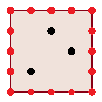
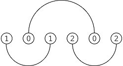
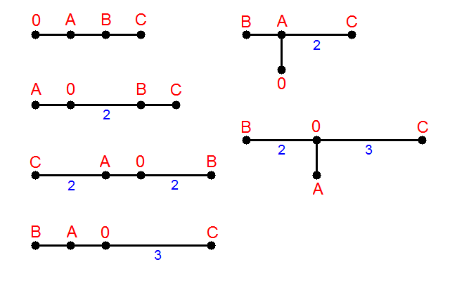

A EnclosingTriangle
题意
一个$m\times m$的网格，边界上是红点，内部有$n$个黑点。你需要求出有多少个以红点为顶点的三角形，满足这个三角形包含了所有的黑点。

题解
记左下角为$(0,0)$，横着的是$x$轴，竖着的是$y$轴。
将所有顶点编号，左下角为$1$，然后逆时针依次增大。
对于每个点，我们可以求出当它作为三角形的某个顶点时，下一个顶点的范围，不难看出这个范围是一段区间。
枚举三角形三个点中编号最小的顶点，当这个顶点单调移动的时候，合法的第二个顶点的范围也在移动。每有一个新的顶点成为合法的第二个顶点，那么某个范围内的顶点都能成为此时的第三个顶点。
注意到第一个顶点同样对第三个顶点的编号有限制，第三个顶点的编号必须大于某个值。因此我们可以直接用线段树维护，需要支持每加入一个第二个顶点时区间加，然后再区间求和。
B NextAndPrev
题意
有两个串$s,t$，它们都由$26$种小写字符组成。你可以对$s$进行两种操作：
- 选择一种字符，将$s$中这种字符全部变成它的下一个字符，代价为$a$。如：
a变为b，b变为c，z变为a，等等。 - 选择一种字符，将$s$中这种字符全部变成它的上一个字符，代价为$b$。
你的目标是将$s$变为$t$，求最小的代价或者判断无解。
题解
先求出$s$中的每种字符会变成哪种字符。如果一个字符需要变成多种字符，显然此时无解。
另外，如果$t$中每种字符都出现了，并且$s\neq t$，此时也必然无解，因为$s$只要操作一次就不可能再有$26$种字符。
如果最终字符a会变成字符b，我们将其看作$a$向$b$有一条连边。
如果z不能变为a，a也不能变为z，此时我们将所有边按照起点排序，如果$i$的起点在$j$的起点之前，那么$i$的终点必然不能在$j$的终点之后，否则无解。因为如果$i,j$的终点不同的话，你必须保证$i,j$的起点这两种字符在操作过程中始终都不相同。
如果$i,j$的终点一样，比如a想要变成c，b也想要变成c，那么此时它们只需要花费a变为c的代价，因为我们可以先对a操作一次，此时原来的a和b都是b，接着再对b操作一次就能得到c。
显然一个字符自始至终只会进行同一种操作。如果所有字符最终的操作方向不全相同，我们一定能够找到一个分界点，使得每条边均不跨越这个分界点，接着如果我们从这个分界点断开，就能转化为上面那个问题。
一种不错的写法是将所有边的终点按住不同，只动起点。每次尝试将最小的起点加上$26$，然后做一遍上面那个问题。对于原来的一条边$(a,b)$，我们将其变为$(a-52,b)$，然后将所有边扔到一个set里面进行上面的过程，直到它变成$(a+52,b)$。这种做法本质上是考虑每条边在环上的分布情况。
C DisjointSemicircles
题意
$2n$个点排成一行，每个点编号为$1\sim n$，并且每个编号恰好出现两次。对于相同编号的两个点$a,b$，以它们为端点连出一个半圆。这个半圆可以在这$2n$个点的上方，也可以在下方。你需要保证所有半圆都不相交。
现在给出这$2n$个点的编号，有些位置是$-1$，表示这个位置的编号还不确定。你需要判断是否存在一组合法的编号，满足至少存在一种合法的分配圆弧的方案。
保证给出的编号中，每种编号要么不出现，要么出现两次。

题解
先考虑没有$-1$的情况怎么做。
此时每段半圆在哪里已经确定了，我们只需要给每个半圆分配它在上面还是在下面。
这个问题看起来就非常的二分图判定或者2-SAT，直接枚举所有圆弧对，如果这两个圆弧相交，那么它们必然在不同侧。
将所有端点确定的圆弧拿出来跑二分图染色，枚举每个连通块的分配情况。现在每个已确定圆弧的朝向已经确定好了，考虑如何判断剩下的$-1$是否有解。
对于一段圆弧$[l,r]$，我们记一个位置的圆弧朝上时为$1$，朝下时为$0$。如果$[l,r]$这段圆弧是朝上的，那么区间$[l+1,r-1]$必然有偶数个$1$。否则一定存在一条圆弧与$[l,r]$相交。同理，如果$[l,r]$朝下，那么$[l+1,r-1]$必然有偶数个$0$。
由于所有已确定端点的圆弧的朝向也已经确定，因此我们可以直接根据上面的限制建图跑二分图染色。注意我们只关心那些原来为$-1$的位置，因为只有它们需要决定朝向。由于每个限制相当于告诉你某段区间有奇数个或者偶数个$1$，将每个点的$0/1$转为前缀异或，那么每条限制就转化为了对两个点的限制。另外，显然整个序列中必须有偶数个$0$。
此时最坏复杂度为$O(2^{25}\times n)$，考虑优化。
如果一段已确定圆弧$(a,b)$没有与其它任何已确定圆弧相交，那么这段圆弧是相对独立的。根据上面的讨论，如果$[a,b]$这段区间的长度为偶数，那么其中必然有偶数个$0$，偶数个$1$。此时这段圆弧最终朝向何处并不重要。如果$[a,b]$的长度为奇数，那么要么其中$1$的个数是偶数，要么$0$的个数是偶数，我们可以根据谁的个数是偶数来决定这段圆弧的最终朝向。
因此，对于这种独立的圆弧，我们并不需要枚举它的最终朝向，具体来说，如果它的长度为偶数，就加一条$[a,b]$出现偶数个$1$的限制，否则不管。此时复杂度降为$O(2^{12}\times n)$。
D UnknownTree
题意
有一棵树，你并不知道这棵树的形态。这棵树上有$n+3$个点，编号为$0\sim n-1,A,B,C$。给出$A,B,C$三个点到$0\sim n-1$的距离，问有多少种可能的树的形态。已知每条边的边权都为正。
题解

这是第一个样例解释的图片，可以发现可能的树的形态只有两种：要么$A,B,C$排成一行，要么它们构成一个类似菊花图的东西，菊花图的中心是$0\sim n-1$中的一个点。
先考虑第一种情况。我们不妨假设$A$在$B$的左边，$B$在$C$的左边，并且我们已经确定了$A,B,C$之间的距离。具体怎么确定下面会说。
对于在$A,B,C$链上的其它点，我们可以根据$A,B,C$之间的距离以及它们到这个点的距离确定这个点的具体位置。
对于其它点，它们一定挂在$A,B,C$链上的某个点的子树内。如果对于每个点，我们求出它能挂在多少个点下面，那么最终的方案数就是所有点的这个东西的乘积。
具体来说，如果$i$挂在$j$下方，显然$A_i>A_j$，并且$A_i-A_j$就是$i,j$的距离，它需要满足$A_i-A_j=B_i-B_j=C_i-C_j$。对于每个$i$统计出$j$的数量。
将$A,B,C$也视为三个等待确定位置的点，由于$A,B,C$间的距离已知，因此这三个点也可以看作与其它$n$个点相同的点。
对于一个点来说，如果它满足条件的$j$的个数为$0$，那么它必然在$A,B,C$这条链上，此时我们只需要根据这个点的信息判断它是否真的在链上即可。
考虑如何确定$A,B,C$三点的距离，先随便找到在$A,B,C$链上的一个点，然后根据这个点的信息直接枚举所有可能的距离。注意可能需要用一个set判重。
对于第二种情况，也就是菊花图的情况，枚举作为菊花图的根的节点$u$。显然如果根不同，两棵树必然也不同。接着我们可以根据这个根得到它到$A,B,C$三个点的距离。与上一种情况类似，我们同样求出每个点能够挂在多少个点下方，如果一个点的这个值为$0$，那么它肯定在$u-ABC$的路径上。由于此时我们已经知道了$u$到$A,B,C$的距离，因此我们可以确定这个点的准确位置，同样用它到另外两个点的距离判断是否合法。
E RabbitWorking
题意
给出一张完全图，每条边有一个非负的边权。你需要选择$k$个点，$k$由你自己决定。考虑这$k$个点的导出子图，记边权的总和为$p$，你要使得$\frac{p}{k(200-k)}$尽量大。输出这个最大值。
题解
记最终我们选的边的集合为$E$，考虑二分答案，假设现在要判断答案是否大于$x$，那么有
注意到$E$的大小必然为$\frac{k(k-1)}{2}$，此时我们将等式两边同时加上$xk(k-1)$。
也就是说，如果将图中的边权全部加上$2x$，所有的点权设为$-199xk$，我们只需要求出是否存在一个导出子图的权值之和大于$0$。
由于所有边权非负，可以将原问题看作选择若干条边，如果一条边被选则它的两个端点都必须被选，从而将点的导出子图转化为边的导出子图。
点的导出子图是做不了的，但是边的导出子图可以直接最大流。
考虑这样建图：
- 将点放在左侧，边放在右侧形成一个二分图。
- $s$向所有点连边，边权为$199x$。
- 每个点连接所有以它为端点的边，边权为$\infty$。
- 每条边向汇点连边，边权为这条边原来的边权$+2x$。
割去一条边与汇点的连边代表不选这条边；割去一个点与源点的连边代表选这个点。答案为边权之和$-$最小割。
F PointErasing
题意
平面上有$n$个点，第$i$个点的坐标为$(i,y_i)$，$y_i$可以相同。你可以进行若干次操作，每次你会选择现在还存在的两个点，删除以它们作为顶点的矩形中所有严格在内部的点。你会一直进行这个操作直到无法再删除任何点为止。对于$i\in [1,n]$求出最终能否剩下恰好$i$个点。
题解
由于每次操作不能删除恰好在矩形边界上的点，因此对于$y$坐标最小、最大；$x$坐标最小、最大的这些点来说，它们一定不会被删除。

注意到题目给出坐标的方式保证了不存在两个$x$坐标相同的点，因此上图中矩形左边界、右边界上都恰好有一个点。
考虑由上下边界中所有点围起来的矩形，显然这个矩形里面不能剩下任何点，否则我们可以直接选择这个矩形操作，从而将矩形内部的点删掉。
对于剩下的左右两侧的点，由于对称性，接下来我们讨论左侧的点。

不妨假设左边界上那个点的$y$坐标为$t$。
如果这个点的$y$坐标不等于$t$，那么我们一定可以在上边界或者下边界中选择一个点，然后对这个点与左边界上的那个点围成的矩形进行一次操作，矩形内部的点就会被删除。
也就是说，最后剩下的点的$y$坐标一定为$t$。
考虑什么情况下一个$y$坐标为$t$的点可以不出现。

图中画出了三种颜色的矩形：绿色、蓝色、灰色。
绿色代表，选择一个$y\neq t$的点，再选择上边界上的一个点作为矩形的两个端点，删除此矩形内的所有点。
灰色代表，选择一个$y\neq t$的点，再选择下边界上的一个点作为矩形的两个端点，删除此矩形内的所有点。
蓝色代表，选择两个$y\neq t$的点，将这个两个点围成的矩形内的点全部删除。
将所有$y=t$的点拿出来，上面的三种删除方式可以对应三种区间，问题转化为有一排点，再给定若干个区间，每次可以选择一个区间删除区间内的所有点，问最后剩下的点有多少种情况。由于$n$只有$50$，因此随便$dp$一下就可以了。
G MeetInTheMaze
题意
给出一张$n\times m$的网格图，每个格子要么是墙，要么是空地。格子是四联通的，且相邻两个格子之间距离为$1$。
$A,B,C$三个人要在这张网格图上面走，每个人都有一个起始格子的集合，一开始每个人会随机选择集合中的一个点作为起点。他们会选择一个格子作为共同的终点，且这个格子到三个人起点的距离之和最小。
输出这个最小值的期望。或者判断期望为无穷大。
题解
如果直接暴力枚举三个人的起点，复杂度$20\times 20\times 50^2\times50^2$，看起来就过不去。
注意到$B,C$两个人的集合大小比较小，考虑枚举这两个人的起点，再计算每个$A$的起点的答案之和。
将三个人到达同一个点看作$B,C$先到同一个点，然后他们再从这个点出发到$A$的距离。
因此可以直接求出$B,C$起点到图中每个点的最短距离，这个可以通过一次BFS实现。接着我们再跑一遍最短路，每个点的初始距离为$B,C$两点的距离之和，这样$A$的每个起点的距离就是答案。
H ImpossibleGame
题意
考虑所有长度为$K$，且字符集为A,B,C,D的所有串，你需要给每个串选择一种颜色。现在有一个人要玩游戏，游戏规则如下：
一开始这个人会选择一个串作为初始串，然后进行若干次操作，操作有两种：
- 交换两个相邻的字符
- 选择一个等于$A_i$的子串，将其变为$B_i$。
如果这个人通过若干次操作之后，得到了一个与原串不同，但是颜色与原串相同的串，他就赢了。问最小需要多少种颜色使得这个人不可能赢。
题解
第一种操作的存在使得他可以任意调换串中字符的出现顺序，因此对于一个串来说，它的有效信息只有$A,B,C,D$四种字符的出现次数。
注意到$k=30$时，本质不同的串的数量其实很少，大约只有$5500$种。
将每种串看作一个点，如果一种串可以通过二操作变为另一种串，那么就连一条边。问题转化为给出一张带权有向图，现在需要给每个顶点染上一种颜色，使得每个点能遍历到的所有点的颜色都与它不同。
不难看出答案即为将强连通分量缩起来之后带权最长链的长度，跑一次tarjan就行了。
I BunnySequence
题意
定义$f(x)=\begin{cases}0&x=1\\\ f(x/m)+1&m\mid x\\\ f(x+1)+1& \text{otherwise}\end{cases}$
给定$m,n$，问有多少个$x$使得$f(x)=n$。
题解
对于一个数$x$，将它的$m$进制从高到低写下来，接着从右往左考虑每一位。
如果当前位为$0$，那么$f(x)+1$，并且将这一位删去，否则答案加上$m-i+1$，删去这一位的同时对前面的位做一次进位加法。
考虑最终每一位对答案的贡献形成的序列，这个序列的每个数都是$1\sim m$之间的数。
于是我们有一个大胆的猜想：答案为将$n$划分为若干个$1\sim m$之间的数的方案数。
写了一发发现过不了样例，观察$m=2,n=4$的情况，此时的答案应该是$3$，但是输出$4$。
合法的$x$一共有三个：$6,7,16$。他们的序列分别为1 2 1，1 1 2，1 1 1 1，而在刚刚猜的结论中，2 1 1这种序列应该也会出现。
这种序列不会出现的原因是：前两次操作都是1，删除最后一位，然后一个2代表此时剩下了一个1，我们要先加$1$再除以$2$。但是根据$f(x)$的定义，$1$是不用再继续操作的，因此这种情况不合法。
因此，序列的第一位不能是$m$，直接用$dp[n]$减去$dp[n-m]$即可。
J ColorfulJewelry
题意
给出一个$n\times m$的矩形，每个格子是R,G,B三种颜色之一。给定$k$，你可以选择两个可以重叠的边长为$k$的方阵，然后选择一些被覆盖的格子拿出来排成一条链。问能够得到的本质不同的链的数量，链可以翻转。
题解
如果R,G,B的个数确定，那么这就是一个经典的Polya问题。
注意到$n$特别小，直接枚举两个方阵的左上角是可以接受的，且R,G,B的个数均不会多于$n^2$个。考虑枚举R,G的数量，同时求出此时B的最大值。问题转化为R,G的个数确定，B的个数小于某个值的本质不同的链的数量。
如果不动，那么方案数为${R+G\choose G}\times{R+G+B\choose R+G}$。当$R,G$确定时唯一在变的只有$B$，这是一个经典的组合数。我们有
唯一的置换方案就是翻转整条链。当链的长度为偶数的时候，$R,G,B$的数量都必须是偶数；否则三者中必须有一个数为奇数，方案数的计算与上面类似。
K SemifinalAssignment
题意
有$n$个人打比赛，第$i$个人有一个得分区间$[l_i,r_i]$，他最终的得分为这个区间内等概率随机的一个整数。如果两个人的分数不同，那么分数高的人排在前面，否则编号较小的人排在前面。最后的前$k$名选手会按照编号从低到高排成一行，再12211221...地分配到两个组中，问每个人进入前$k$名且被分入第一组的概率有多大，被分入第二组的概率有多大。
题解
由于最后前$k$名选手会按照编号排序，因此我们不能直接考虑有多少个人的分数排在当前这个人的前面。
枚举前$k$名选手的最低分$x$，再枚举当前需要计算概率的人$p$。设$dp[i][j][0/1][0/1/2]$表示已经考虑了前$i$个人，有$j$个人排在最终的前$k$名，此时得分为$x$的人能否进入前$k$名，$p$这个人排在第一组/第二组的概率为多大。
转移的复杂度$O(1)$，总时间复杂度为$O(n^3w)$，这里$w$为所有$r_i$的最大值。